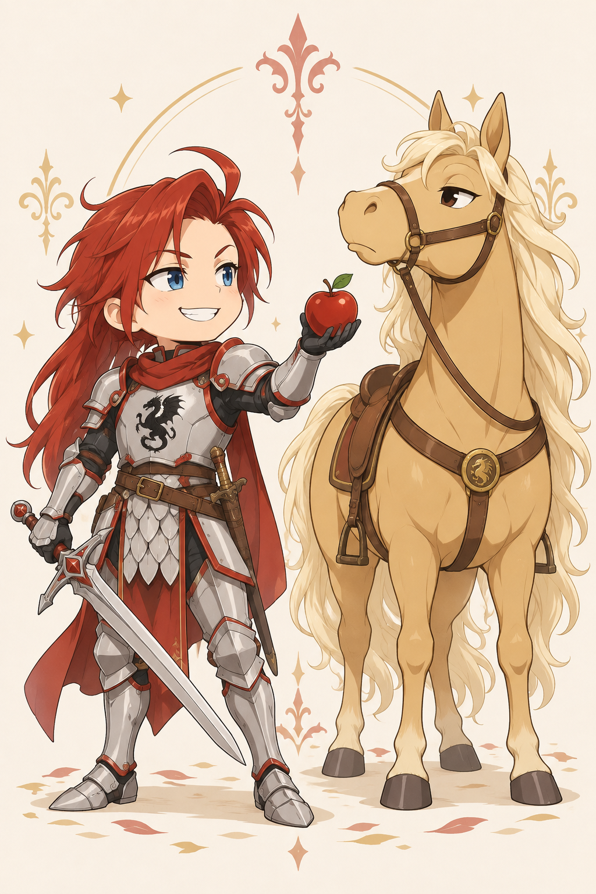

Mehrere Treffer sind möglich?
Schuppenschnitt, Gekreuzte Klauen und Erster Hieb des Jungdrachens nutzen die drei regulären Ressourcen für drei getrennte Angriffe. Der leichte Bonusangriff fällt kleiner aus.
Schwertfolgen, Silberschuppe und die richtige Antwort
Gawain führt Drachenzahn in kurzen, klaren Schnittlinien. Seine Stärke liegt im Wechsel zwischen mehreren bezahlten Angriffen, schützenden Haltungen und einer vorbereiteten Gegenattacke. Silberschuppe hilft ihm, einen längeren Schlagabtausch zu überstehen; Tanor verlangt eine eigene Planung.

Bogenstand: 14. Oktober 2026 · Ohne temporäre Szeneneffekte. Aktuelle TP, Ressourcen und Zustände stehen im Charakterbogen.
Als Teulu auf Stufe 5 kennt Gawain 22 Jungdrachen-Techniken. Gegen ein einzelnes Ziel sind getrennte Angriffe oft ergiebiger als eine einzige teure Technik: Jeder Treffer trägt den festen Schadensbonus erneut. Braucht er Schutz, muss er dafür Angriffe aufgeben. Ein vorbereiteter Konter verursacht erst Schaden, wenn sein Auslöser eintritt.
Schuppenschnitt, Gekreuzte Klauen und Erster Hieb des Jungdrachens nutzen die drei regulären Ressourcen für drei getrennte Angriffe. Der leichte Bonusangriff fällt kleiner aus.
Verwurzelte Schuppe federt den nächsten schädigenden Treffer ab. Geschuppte Deckung schützt über RK, bindet aber zusätzlich die Reaktion. Durchschnaufen braucht ebenfalls die Bonusaktion.
Gebundene Klaue kann die Reaktion sperren. Lauernde Klaue wartet dagegen auf einen verfehlten gegnerischen Angriff. Entscheide vorab zwischen direktem Druck und bedingter Gegenwehr.
Aktion, Bonusaktion und Reaktion erneuern sich beim nächsten regulären eigenen Beitrag. Besondere Aktionen bilden einen begrenzten Vorrat mit eigener Erholung.
Eine Bonusaktion · einmal pro langer Rast · höchstens bis zum TP-Maximum · ohne KON-Bonus.
Wähle einen Eintrag für seine Vorschau. Persönliche Techniken, Kampfformen, Waffenangriffe und passive Fähigkeiten sind getrennt aufgeführt. Die Kampfpläne dieses Guides behandeln den Nahkampf; die Gesamtliste enthält auch vorhandene Fernkampfoptionen.
33 Einträge
Keine passenden Einträge. Ändere die Suche oder die Filter.
Drachentanz · Tanz des Jungdrachens · ab Stufe 2
Gawain setzt den Fuß fest auf und zieht Drachenzahn diagonal durch die offene Linie.
Ein sauberer Diagonalhieb aus festem Stand, ohne die ganze Folge vorwegzunehmen.
Ein kräftiger Einzelhieb mit Technikschaden. Bonusaktion und Reaktion bleiben verfügbar.
Auswahl und Ausrüstung gelten für diese Vorschau. Kosten und Werte beziehen sich auf den dokumentierten Bogenstand; Waffenwechsel und Aufsteigen benötigen im Kampf ihre regulären Aktionen.
Die folgenden Abläufe passen bei verfügbaren Ressourcen in einen eigenen Beitrag. Treffer, Rettungswürfe und Reaktionen entscheiden über ihre tatsächliche Wirkung.
6 Kombinationen
Aktion, Reaktion und Bonusaktion werden zu je einem Angriff. Mit einhändigem Drachenzahn sind die Grundwerte 1W8+3, 1W8+3 und 1W4+1. Jeder Angriff würfelt seinen Treffer separat; es wird keine Besondere Aktion verbraucht.
Alle regulären Ressourcen sind gebunden. Wer jetzt Heilung, Deckung oder einen vorbereiteten Konter braucht, muss einen Teil dieser Folge ersetzen.
Zuerst die Täuschende Klaue. Nach einem Treffer erhält der nächste eigene Waffenangriff einmal Vorteil: hier Gekreuzte Klauen. Die Finte spart keine Ressourcen, kann aber die Chance auf den zweiten Treffer erhöhen.
Verfehlt die Finte, bleibt der Anschlussangriff normal. Der Vorteil gilt einmal; die Vorschau zeigt die Grundwerte vor dieser Vorbereitung.
Zwei reguläre Schwertangriffe halten den Druck aufrecht. Die Bonusaktion bereitet 4 Schadensreduktion gegen den nächsten schädigenden Treffer vor. Das ist gegen einen erwarteten Einzelhieb oft nützlicher als ein leichter Zusatzangriff.
Die Schuppe schützt einmal. Sie ersetzt andere Jungdrachen-Schutzhaltungen und Konterhaltungen; Silberschuppes Rüstungsschutz ist davon unabhängig.
Gawain greift einmal an, schließt mit der Reaktion seine Deckung für +1 RK und nutzt die Bonusaktion für 1W10 + 5 TP Heilung. So bleibt er handlungsfähig, während er seinen einmaligen Heilvorrat einsetzt.
Durchschnaufen ist nur einmal pro langer Rast verfügbar und heilt höchstens bis 49 TP. Geschlossene Schuppe wird nicht auf eine stärkere positive Kampfform-RK-Haltung addiert.
Gebundene Klaue verursacht Waffenschaden. Nach Treffer und misslungener KRF-Rettung sperrt sie die gegnerische Reaktion im nächsten eigenen Beitrag. Gawains eigene Reaktion bleibt für den zweiten Schwertangriff verfügbar.
Aktion und Bonusaktion des Gegners bleiben erhalten. Verfehlt Gawain oder gelingt die gegnerische Rettung, tritt die Sperre nicht ein.
Nach dem Hauptangriff reserviert Gawain Bonusaktion und Reaktion für die Lauernde Klaue. Ein verfehlter gegnerischer Waffen-/Technikangriff löst einmal eine Gegenattacke mit Vorteil und normalem Waffenschaden aus.
Ohne passenden Fehlschlag gibt es keinen Kontertreffer. Die ganze auslösende Angriffsfolge endet zuerst; Konter erzeugen keine weiteren Konterketten. Eine andere Jungdrachen-Schutzhaltung würde die Vorbereitung ersetzen.


Einhändig 1W8+3 Schaden bei 1W20 +5 Trefferwurf. Zweihändig steigt die Waffenbasis auf W10; der Griffwechsel bringt im System −1 Angriff, also 1W20 +4. In der Vorschau lassen sich beide Führungen vergleichen. Gawain führt keinen Schild.
Der sorgfältige Schliff gibt +1 Schaden; dieser Bonus ist in den Waffenwerten bereits enthalten. Ein kritischer Treffer mit Drachenzahn verursacht zusätzlich +2 Schaden. Diese Drachenkerbe wird nicht noch einmal verdoppelt und gilt auch für passende Schwerttechniken.
Mit Geschick geführt: 1W20 +6 und 1W4+3 Stichschaden. Eine Ersatzwaffe nach Entwaffnung oder gegen passenden Schutz. Die schwertgebundenen Grundtechniken benötigen Drachenzahn; die Vorschau zeigt nur tatsächlich kompatible Ausrüstungen.
Die schwere Draig-Rüstung gibt RK 15 ohne GES-Bonus und verringert Hieb- und Stichschaden um 2. Gegen Wucht oder andere Schadensarten greift dieser individuelle Schutz nicht. Er ersetzt den allgemeinen Grundschutz schwerer Rüstung.
Duft-Regeneration verlangt einen vorhandenen, passend erkannten und tatsächlich benutzten Inventargegenstand. Gegenstand und Nutzung müssen im Kampf dokumentiert werden. Der Rittersiegelring unterstützt dagegen soziale Proben und liefert keinen Duellbonus.
Ohne Begleiter trägt die Figur Angriff und Abwehr allein. Mit einem aktiven Tier kommen dessen eigene Handlungen, Ressourcen und Verwundbarkeit hinzu.
Ohne Tanor bleibt Gawains vollständiges Schwertarsenal verfügbar. Mit ihm reitet Gawain einen jungen Rhyfelhengst; sein aktueller Teulu-Bogen erhält dadurch keine zusätzlichen Reittechniken und keine kostenlosen Pferdewürfel.
Beritten beginnen oder später die reguläre Bonusaktion für das Aufsteigen bezahlen. Der Guide zeigt beide Aufstellungen, aber ein berittener Angriff wird dadurch nicht automatisch stärker. Platz, Untergrund und die tatsächliche Stellung bestimmen, ob Reiten sinnvoll ist.
Tanor hat auf Stufe 1 nur 16 TP und RK 12. Wenn er selbst kämpft, braucht er einen eigenen Szenenakteur. Tritt und Biss kosten jeweils seine Aktion; beides zusammen ist ohne weitere Freigabe keine kostenlose Doppelattacke.
In einem langen Gefecht kann es klüger sein, Tanor aus der unmittelbaren Gefahrenzone zu halten und zu Fuß weiterzukämpfen. Seine Abneigung gegen Schlamm und Regen sowie seine Vorliebe für rote Äpfel gehören zur Figur; sie verleihen keine ungeschriebenen Kampfboni.
Entwaffnete Waffen werden zu Szenengegenständen. Aufheben und Ausrüstungswechsel kosten die regulären Aktionen. Temporäre Wirkungen enden nach ihrer Dauer oder ihrem einmaligen Auslöser.
Gawain gewinnt an Verlässlichkeit, wenn er einfache Schwertangriffe sauber kombiniert und früh zwischen Druck, Heilung und Abwehr entscheidet. Kontrolltechniken stören gezielt die benötigte Ressource des Gegners; teure Flächenangriffe und bedingte Konter bleiben Werkzeuge für passende Gelegenheiten. Tanor erweitert die Aufstellung, verlangt aber Schutz und eigene Handlungen.
Zurück nach oben ↑